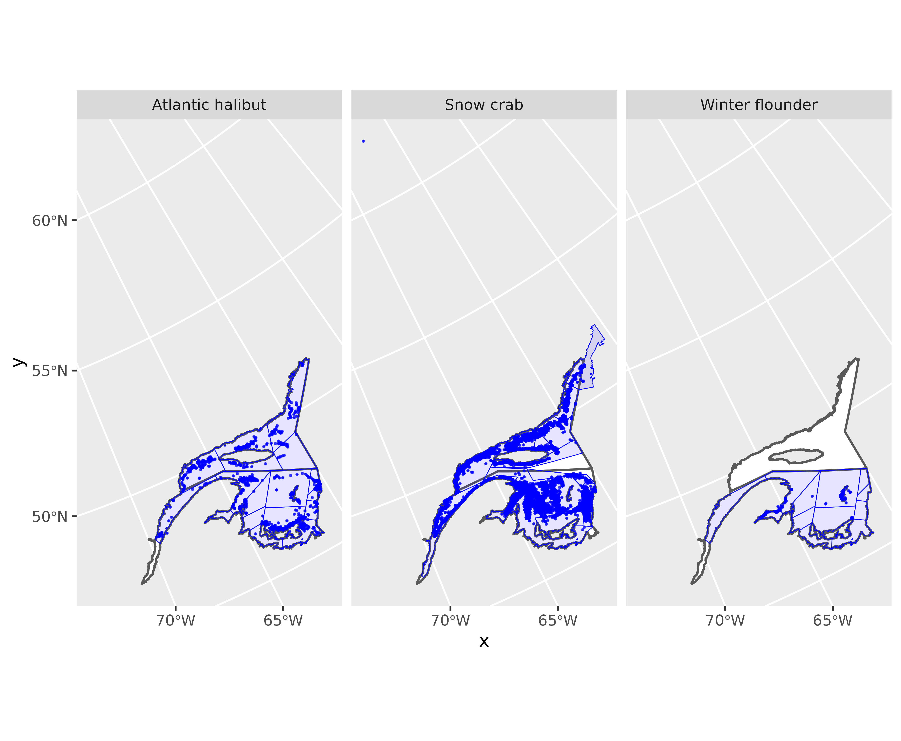
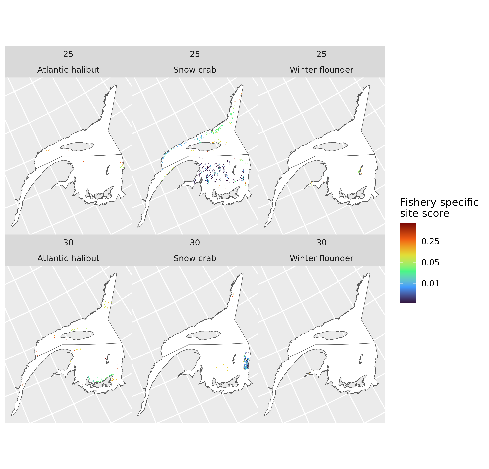

Overview
This vignette provides an overview of the steps to generate fishery-specific weekly site scores, using a subset of anonymised landings data. Data have been subjected to quality controls. Each row is associated with a fishing area (column ‘fa’). Catch amounts have been removed from the data.
R packages
Standard R packages are used that are available from CRAN, as well as some that only available on GitHub.
GitHub R packages
The following packages are all available from https://jolenesutton.github.io.
Get landings data and polygon data
Landings data
df<-fs.data.anon
names(df)
#> [1] "fishery" "event.id" "trip.id" "cfv.anon" "year"
#> [6] "dateland" "ctchdate" "sw" "nafodiv" "depth.gebco"
#> [11] "x" "y" "gear.name" "gear.amount" "hours.fished"
#> [16] "days.fished" "fa"| 2015 | 2016 | |
|---|---|---|
| Atlantic halibut | 856 | 879 |
| Snow crab | 10688 | 9731 |
| Winter flounder | 498 | 547 |
| fishery | event.id | trip.id | cfv.anon | year | dateland | ctchdate | sw | nafodiv | depth.gebco | x | y | gear.name | gear.amount | hours.fished | days.fished | fa |
|---|---|---|---|---|---|---|---|---|---|---|---|---|---|---|---|---|
| Atlantic halibut | ahx319;2015-07-13;2015-07-10;49.49083;-63.851 | ahx319;2015-07-13;2015-07-10 | ahx319 | 2015 | 2015-07-13 | 2015-07-10 | 29 | 4S | -192.0005 | 2244026 | 1586757 | longline | 12 | 6 | 1 | GQ_GFA_4S4 |
| Atlantic halibut | ahx319;2015-07-13;2015-07-11;49.47217;-63.84033 | ahx319;2015-07-13;2015-07-11 | ahx319 | 2015 | 2015-07-13 | 2015-07-11 | 29 | 4S | -213.9925 | 2245667 | 1585274 | longline | 12 | 6 | 1 | GQ_GFA_4S4 |
| Atlantic halibut | ahx149;2015-08-10;2015-08-08;50.043;-59.21133 | ahx149;2015-08-10;2015-08-08 | ahx149 | 2015 | 2015-08-10 | 2015-08-08 | 33 | 4S | -209.9678 | 2505219 | 1804340 | longline | 6 | 6 | 1 | GQ_GFA_4S5 |
| Atlantic halibut | ahx149;2015-08-10;2015-08-09;50.043;-59.21 | ahx149;2015-08-10;2015-08-09 | ahx149 | 2015 | 2015-08-10 | 2015-08-09 | 33 | 4S | -209.9678 | 2505301 | 1804390 | longline | 6 | 12 | 1 | GQ_GFA_4S5 |
| Atlantic halibut | ahx149;2015-08-13;2015-08-12;50.34833;-59.55267 | ahx149;2015-08-13;2015-08-12 | ahx149 | 2015 | 2015-08-13 | 2015-08-12 | 33 | 4S | -127.8552 | 2466770 | 1820762 | longline | 6 | 6 | 1 | GQ_GFA_4S5 |
| Atlantic halibut | ahx149;2015-08-24;2015-08-22;50.26633;-59.586 | ahx149;2015-08-24;2015-08-22 | ahx149 | 2015 | 2015-08-24 | 2015-08-22 | 35 | 4S | -141.9655 | 2469449 | 1811720 | longline | 6 | 4 | 1 | GQ_GFA_4S5 |
Note that there are missing spatial coordinates (columns
‘x’ and ‘y’). There are also some missing depths, and depths > 0 m
(on land!)
summary(df$x)
#> Min. 1st Qu. Median Mean 3rd Qu. Max. NAs
#> 1645552 2246327 2363254 2336776 2477321 2597402 1161
summary(df$y)
#> Min. 1st Qu. Median Mean 3rd Qu. Max. NAs
#> 1275679 1409764 1456497 1503025 1577191 2906314 1161
summary(df$depth.gebco)
#> Min. 1st Qu. Median Mean 3rd Qu. Max. NAs
#> -479.01 -111.99 -83.00 -92.08 -69.00 331.95 1162Fishing area polygons
fa.poly<-readRDS(system.file('extdata','fa.poly.rds',package='fisheriescape'))
fa.poly<-terra::vect(fa.poly, geom=c("geometry"), crs='ESRI:102001', keepgeom=F)NAFO polygons
This shapefile is not necessary for estimating site scores, but it is useful here for plotting. Originally sourced from https://www.nafo.int.
naf<-readRDS(system.file('extdata','nafo.rds',package='fisheriescape'))
naf<-terra::vect(naf, geom=c("geometry"), crs='ESRI:102001', keepgeom=F)Plot
Most of the coordinates are inside the fishing area polygons, but some are outside.
ggplot()+
geom_spatvector(data=naf,fill='white',linewidth=0.6)+
geom_point(data=df,aes(x,y),size=0.2, col='blue',alpha=0.75)+
geom_spatvector(data=fa.poly,fill='blue',alpha=0.1,col='blue')+
facet_wrap(~fishery)
Site score
During the site score process, records with coordinates inside the fishing area polygons will be assigned to a spatial reference grid according to their coordinates. Records that are missing coordinates records with coordinates outside the fishing area polygons, and records with coordinates at depths > 0 m will be assigned to a spatial reference grid according to the SWIM framework. When applying the SWIM framework, the depths from records with good quality coordinates will be used to establish sampling weights over the spatial reference grid. Additional attributes can be incorporated into the SWIM framework, but for simplicity, we will only use depths in this vignette.
Spatial reference grid
First, we need a spatial reference grid. The one used here is a 10 km2 hexagonal grid from Koropatnick and Coffen-Smout, 2020. The grid has been cropped to the approximate study area extent. Each grid cell has been assigned its median depth (m) based on GEBCO 2024.
grid<-readRDS(system.file('extdata','grid.rds',package='fisheriescape'))
grid<-terra::vect(grid, geom=c("geometry"), crs='ESRI:102001', keepgeom=F)
grid
#> class : SpatVector
#> geometry : polygons
#> dimensions : 110676, 6 (geometries, attributes)
#> extent : 1576378, 3139826, 780168.8, 2239860 (xmin, xmax, ymin, ymax)
#> coord. ref. : Canada_Albers_Equal_Area_Conic (ESRI:102001)
#> names : OBJECTID GRID_ID Subset Shape_Leng Shape_Area depth.med
#> type : <num> <chr> <chr> <num> <num> <num>
#> values : 167180 ATT-1312 QC, NL, NB, PE, NS 11771.3 1e+07 350.689
#> 167181 ATU-1312 QC, NL, NB, PE, NS 11771.3 1e+07 416.052
#> 167182 ATV-1312 QC, NL, NB, PE, NS 11771.3 1e+07 315.953
#> ...
names(grid)
#> [1] "OBJECTID" "GRID_ID" "Subset" "Shape_Leng" "Shape_Area"
#> [6] "depth.med"
Next, we need to distinguish records that have good quality
coordinates (i.e., inside fishing area polygons), from those that have
erroneous coordinates (i.e., outside of fishing area polygons or with
depths > 0 m).
df$to.swim<-'no'
df[which(is.na(df$x)|is.na(df$y)),'to.swim']<-'yes'
df[which(df$depth.gebco>0),'to.swim']<-'yes'
table(df$to.swim,useNA='always')
#>
#> no yes <NA>
#> 21952 1247 0
## any points outside fa.poly
unique(df$fishery)
#> [1] "Atlantic halibut" "Snow crab" "Winter flounder"
unique(fa.poly$fishery)
#> [1] "Atlantic halibut" "Snow crab" "Winter flounder"
my.list<-list()
fisheries<-unique(fa.poly$fishery)
for(j in 1:length(unique(fisheries))){
dat<-df[which(df$fishery==fisheries[j]),]
poly<-fa.poly[which(fa.poly$fishery==fisheries[j]),]
fleets<-sort(unique(dat$fa))
inner.list<-list()
for(i in 1:length(fleets)){
tmp.df<-dat[which(dat$fa==fleets[i]),]
tmp.poly<-poly[which(poly$fa==fleets[i]),]
tmp<-terra::vect(tmp.df,geom=c('x','y'),crs=crs(poly))
tmp$inout<-is.related(tmp, tmp.poly,relation='within')
inner.list[[i]]<-tmp
}
my.list[[j]]<-do.call(rbind,inner.list)
}
pts<-do.call(rbind,my.list)
rm(my.list)
nrow(df)
#> [1] 23199
nrow(pts)
#> [1] 23199
df2<-left_join(df,as.data.frame(pts))
#> Joining with `by = join_by(fishery, event.id, trip.id, cfv.anon, year,
#> dateland, ctchdate, sw, nafodiv, depth.gebco, gear.name, gear.amount,
#> hours.fished, days.fished, fa, to.swim)`
df2[which(df2$inout==FALSE),'to.swim']<-'yes'
table(df2$to.swim,useNA='always')
#>
#> no yes <NA>
#> 21892 1307 0
table(df$to.swim,useNA='always')
#>
#> no yes <NA>
#> 21952 1247 0Assign records to the spatial reference grid
Records that have good quality coordinates are assigned to the spatial reference grid according to their coordinates.
index<-which(df2$to.swim=='no')
x<-gslSpatial::assign_points_terra(df2[index,'x'],df2[index,'y'],grid[,"GRID_ID"])
df2[index,'GRID_ID']<-x[,3]
Records that have poor quality coordinates are assigned to
the spatial reference grid according to the SWIM
framework. The SWIM framework is applied separately to each fishery
and NAFO division.
no.swim<-df2[which(df2$to.swim=='no'),]
for.swim<-df2[which(df2$to.swim=='yes'),]
for.swim$GRID_ID<-NA
unique(for.swim$fishery)
#> [1] "Atlantic halibut" "Snow crab" "Winter flounder"
table(for.swim$nafodiv,for.swim$fishery)
#>
#> Atlantic halibut Snow crab Winter flounder
#> 4S 25 110 0
#> 4T 105 947 120
for.swim$fn<-paste(for.swim$fishery,for.swim$gear.name,for.swim$nafodiv,sep='-')
no.swim$fn<-paste(no.swim$fishery,no.swim$gear.name,no.swim$nafodiv,sep='-')
unique(for.swim$fn)
#> [1] "Atlantic halibut-longline-4S" "Atlantic halibut-longline-4T"
#> [3] "Snow crab-trap-4S" "Snow crab-trap-4T"
#> [5] "Winter flounder-gillnet-4T"
unique(no.swim$fn)
#> [1] "Atlantic halibut-longline-4S" "Atlantic halibut-longline-4T"
#> [3] "Snow crab-trap-4S" "Snow crab-trap-4T"
#> [5] "Winter flounder-gillnet-4T"
my.list<-list()
fisheries<-sort(unique(for.swim$fn))
fisheries
#> [1] "Atlantic halibut-longline-4S" "Atlantic halibut-longline-4T"
#> [3] "Snow crab-trap-4S" "Snow crab-trap-4T"
#> [5] "Winter flounder-gillnet-4T"
for(i in 1:length(fisheries)){
FOR.SWIM<-for.swim[which(for.swim$fn==fisheries[i]),]
index<-which(fa.poly$fishery==unlist(strsplit(fisheries[i],"-"))[1])
poly<-fa.poly[index,]
grid2<-terra::intersect(grid,poly[,'fa'])
#//////////////////////////////////////////
## Depth scores
# use good quality coordinates to establish depth scores
tmp<-no.swim[which(no.swim$fn==fisheries[i]),]
bin.width=10
bins<-eclectic::bin_variable(abs(tmp$depth.gebco),bin.width)
bins[,2]<-as.numeric(bins[,2])
tmp[,c('bin' ,'bin.midpt')]<-bins[,1:2]
bins<-distinct(bins)
bins<-bins[order(bins$bin.midpt),]
df.hist<-tmp|>
group_by(bin.midpt=as.numeric(bin.midpt))|>
summarise(count=n())|>
mutate(prob.depth=count/sum(count))
grid3<-grid2[which(grid2$depth.med<=0),]
grid3$depth<-abs(grid3$depth.med)
grid3$bin.midpt<-NA
grid.bins<-seq(bins[1,'bin.midpt']-(bin.width/2),max(grid3$depth),by=bin.width)
for(j in 1:length(grid.bins)){
start<-grid.bins[j]
stop<-grid.bins[j]+bin.width
bin.midpt<-(start+stop)/2
grid3[which(grid3$depth>=start&grid3$depth<stop),'bin.midpt']<-bin.midpt
}
grid4<-left_join(grid3,df.hist[,c(1,3)])
grid4<-grid4[,-which(names(grid4)=='bin.midpt')]
index<-which(is.na(grid4$prob.depth))
if(length(index)>0){
grid4[index,'prob.depth']<-0
}
grid4$prob<-grid4$prob.depth
grid4<-grid4[,-which(names(grid4)=='depth.med')]
dim(grid4)
#//////////////////////////////////////////
## Use depth scores as sampling weights
SWIM.KEYS<-sort(unique(FOR.SWIM$fa))
SWIM.KEYS%in%unique(grid4$fa)
for(p in 1:length(SWIM.KEYS)){
INDEX<-which(FOR.SWIM$fa==SWIM.KEYS[p])
WGHTS<-as.data.frame(grid4[which(grid4$fa==SWIM.KEYS[p]),c('GRID_ID','prob')])
WGHTS[which(is.na(WGHTS[,2])),2]<-0
set.seed(123)
FOR.SWIM[INDEX,'GRID_ID']<-swim::sw_sample(nrow(FOR.SWIM[INDEX,]),WGHTS,option=1)
}
my.list[[i]]<-FOR.SWIM
}
for.swim2<-bind_rows(my.list)
length(which(is.na(for.swim2$GRID_ID))) #should be zero because all records should be associated with a spatial grid cell
#> [1] 0
results<-bind_rows(no.swim,for.swim2)
head(results)
#> fishery event.id
#> 1 Atlantic halibut ahx319;2015-07-13;2015-07-10;49.49083;-63.851
#> 2 Atlantic halibut ahx319;2015-07-13;2015-07-11;49.47217;-63.84033
#> 3 Atlantic halibut ahx149;2015-08-10;2015-08-08;50.043;-59.21133
#> 4 Atlantic halibut ahx149;2015-08-10;2015-08-09;50.043;-59.21
#> 5 Atlantic halibut ahx149;2015-08-13;2015-08-12;50.34833;-59.55267
#> 6 Atlantic halibut ahx149;2015-08-24;2015-08-22;50.26633;-59.586
#> trip.id cfv.anon year dateland ctchdate sw nafodiv
#> 1 ahx319;2015-07-13;2015-07-10 ahx319 2015 2015-07-13 2015-07-10 29 4S
#> 2 ahx319;2015-07-13;2015-07-11 ahx319 2015 2015-07-13 2015-07-11 29 4S
#> 3 ahx149;2015-08-10;2015-08-08 ahx149 2015 2015-08-10 2015-08-08 33 4S
#> 4 ahx149;2015-08-10;2015-08-09 ahx149 2015 2015-08-10 2015-08-09 33 4S
#> 5 ahx149;2015-08-13;2015-08-12 ahx149 2015 2015-08-13 2015-08-12 33 4S
#> 6 ahx149;2015-08-24;2015-08-22 ahx149 2015 2015-08-24 2015-08-22 35 4S
#> depth.gebco x y gear.name gear.amount hours.fished days.fished
#> 1 -192.0005 2244026 1586757 longline 12 6 1
#> 2 -213.9925 2245667 1585274 longline 12 6 1
#> 3 -209.9678 2505219 1804340 longline 6 6 1
#> 4 -209.9678 2505301 1804390 longline 6 12 1
#> 5 -127.8552 2466770 1820762 longline 6 6 1
#> 6 -141.9655 2469449 1811720 longline 6 4 1
#> fa to.swim inout GRID_ID fn
#> 1 GQ_GFA_4S4 no TRUE AYB-1075 Atlantic halibut-longline-4S
#> 2 GQ_GFA_4S4 no TRUE AYC-1075 Atlantic halibut-longline-4S
#> 3 GQ_GFA_4S5 no TRUE BBM-1011 Atlantic halibut-longline-4S
#> 4 GQ_GFA_4S5 no TRUE BBM-1011 Atlantic halibut-longline-4S
#> 5 GQ_GFA_4S5 no TRUE BAZ-1006 Atlantic halibut-longline-4S
#> 6 GQ_GFA_4S5 no TRUE BBA-1008 Atlantic halibut-longline-4SCalculate site scores from the number of records in each spatial grid cell
Counts. For each fishery, count the number of records per week per year.
counts<-results|>
dplyr::group_by(fishery,gear.name,fa,year,sw,GRID_ID)|>
dplyr::summarise(count = dplyr::n())
#> `summarise()` has regrouped the output.
#> ℹ Summaries were computed grouped by fishery, gear.name, fa, year, sw, and
#> GRID_ID.
#> ℹ Output is grouped by fishery, gear.name, fa, year, and sw.
#> ℹ Use `summarise(.groups = "drop_last")` to silence this message.
#> ℹ Use `summarise(.by = c(fishery, gear.name, fa, year, sw, GRID_ID))` for
#> per-operation grouping (`?dplyr::dplyr_by`) instead.
head(counts)
#> # A tibble: 6 × 7
#> # Groups: fishery, gear.name, fa, year, sw [1]
#> fishery gear.name fa year sw GRID_ID count
#> <chr> <chr> <chr> <dbl> <chr> <chr> <int>
#> 1 Atlantic halibut longline GQ_GFA_4S1 2015 19 AVH-1093 2
#> 2 Atlantic halibut longline GQ_GFA_4S1 2015 19 AVH-1094 1
#> 3 Atlantic halibut longline GQ_GFA_4S1 2015 19 AVU-1079 4
#> 4 Atlantic halibut longline GQ_GFA_4S1 2015 19 AVV-1079 1
#> 5 Atlantic halibut longline GQ_GFA_4S1 2015 19 AVV-1081 1
#> 6 Atlantic halibut longline GQ_GFA_4S1 2015 19 AVX-1081 1
Site score. Standardize the counts such
that the values for each fishing area and week sum to 1. Remember to
save this file for the fisheriescape calculations.
site.score<-counts|>
dplyr::group_by(fishery,gear.name,fa,year,sw)|>
dplyr::mutate(sum.count.fa.yr.sw=sum(count),
ss=count/sum.count.fa.yr.sw)
head(site.score)
#> # A tibble: 6 × 9
#> # Groups: fishery, gear.name, fa, year, sw [1]
#> fishery gear.name fa year sw GRID_ID count sum.count.fa.yr.sw ss
#> <chr> <chr> <chr> <dbl> <chr> <chr> <int> <int> <dbl>
#> 1 Atlantic h… longline GQ_G… 2015 19 AVH-10… 2 10 0.2
#> 2 Atlantic h… longline GQ_G… 2015 19 AVH-10… 1 10 0.1
#> 3 Atlantic h… longline GQ_G… 2015 19 AVU-10… 4 10 0.4
#> 4 Atlantic h… longline GQ_G… 2015 19 AVV-10… 1 10 0.1
#> 5 Atlantic h… longline GQ_G… 2015 19 AVV-10… 1 10 0.1
#> 6 Atlantic h… longline GQ_G… 2015 19 AVX-10… 1 10 0.1
summary(site.score)
#> fishery gear.name fa year
#> Length :15311 Length :15311 Length :15311 Min. :2015
#> N.unique : 3 N.unique : 3 N.unique : 33 1st Qu.:2015
#> N.blank : 0 N.blank : 0 N.blank : 0 Median :2015
#> Min.nchar: 9 Min.nchar: 4 Min.nchar: 9 Mean :2015
#> Max.nchar: 16 Max.nchar: 8 Max.nchar: 11 3rd Qu.:2016
#> Max. :2016
#> sw GRID_ID count sum.count.fa.yr.sw
#> Length :15311 Length :15311 Min. : 1.000 Min. : 1.0
#> N.unique : 34 N.unique : 4862 1st Qu.: 1.000 1st Qu.: 34.0
#> N.blank : 0 N.blank : 0 Median : 1.000 Median :167.0
#> Min.nchar: 2 Min.nchar: 7 Mean : 1.515 Mean :284.2
#> Max.nchar: 2 Max.nchar: 8 3rd Qu.: 2.000 3rd Qu.:562.0
#> Max. :15.000 Max. :744.0
#> ss
#> Min. :0.001344
#> 1st Qu.:0.002688
#> Median :0.007463
#> Mean :0.044347
#> 3rd Qu.:0.037037
#> Max. :1.000000Plot results
For simplicity, plot just certain weeks.
weeks<-c(25,30)
plot.grid<-right_join(grid,site.score[which(site.score$sw%in%weeks),])
#> Joining with `by = join_by(GRID_ID)`
ggplot()+
geom_spatvector(data=naf,fill='white')+
geom_spatvector(data=plot.grid,aes(fill=ss),col=NA)+
facet_wrap(~sw+fishery)+
scale_fill_viridis_c(name='Fishery-specific\nsite score',
option='turbo',
trans = scales::pseudo_log_trans(sigma = 0.001),
breaks=c(0.01,0.05,0.25))+
theme(panel.spacing = unit(0, "pt"),
axis.text = element_blank(),
axis.ticks = element_blank())